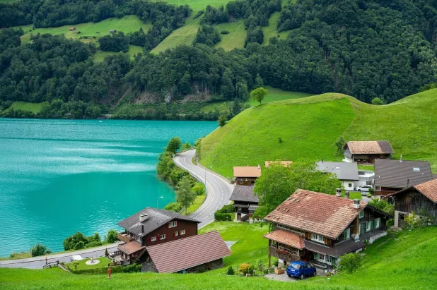
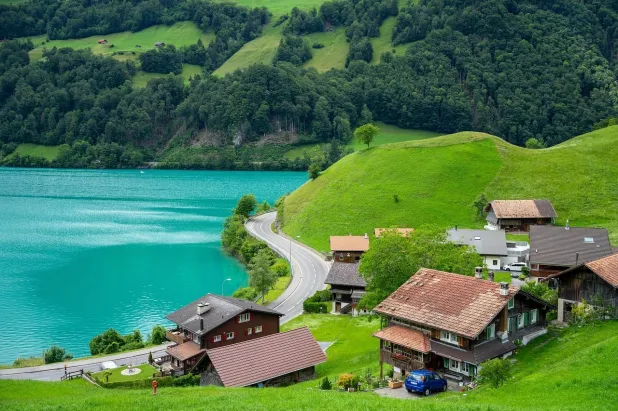

SUÍÇA
 

RESUMO:
A Suíça é um país europeu conhecido por sua neutralidade política, estabilidade econômica, e alto padrão de vida. Localizada na região central da Europa, faz fronteira com a França, Alemanha, Itália, Áustria e Liechtenstein. A Suíça é famosa por suas montanhas (Alpes e Jura), seus lagos cristalinos, e suas cidades organizadas e desenvolvidas, como Zurique, Genebra e Berna, que é a capital.
CARACTERÍSTICAS PRINCIPAIS:
Política e Neutralidade: A Suíça é um dos poucos países que adota uma política de neutralidade, o que significa que ela evita envolver-se em conflitos internacionais. Isso faz com que seja sede de várias organizações internacionais, como a Cruz Vermelha e a ONU. Multilinguismo: O país tem quatro línguas oficiais: alemão, francês, italiano e romanche. Cada região do país fala predominantemente um desses idiomas, refletindo sua diversidade cultural.
Economia: A Suíça tem uma economia muito forte, baseada em setores como bancos, seguros, alta tecnologia, e turismo. Os produtos suíços, como relógios, chocolates e queijos, são reconhecidos mundialmente pela qualidade.
Qualidade de Vida: Com uma das maiores rendas per capita do mundo e serviços públicos eficientes, a Suíça oferece uma alta qualidade de vida, com boa educação, saúde e segurança.
PONTOS TURÍSTICOS:
- Interlaken
- Zurique
- Lucerna
- Genebra
- Berna
- Zermatt
- Lugano
- Grindelwald
- Basel
- Castelo de Chillon
IMAGENS DOS PONTOS MAIS BELOS:
Zermatt é uma encantadora vila alpina na Suíça, famosa por sua vista deslumbrante do icônico pico do Matterhorn. Este destino é ideal para esquiadores, alpinistas e amantes da natureza, oferecendo trilhas, esportes de inverno e uma atmosfera acolhedora. Visitar Zermatt permite vivenciar um ambiente sem carros, paisagens de montanha espetaculares e uma rica cultura suíça.
Berna, a capital da Suíça, é uma cidade encantadora conhecida por seu centro histórico bem preservado, classificado como Patrimônio Mundial da UNESCO. Com suas ruas de paralelepípedos, belas arcadas e a impressionante Torre do Relógio, Berna oferece um ambiente pitoresco e cultural vibrante. Visitar Berna permite explorar museus, apreciar a arquitetura medieval e desfrutar de uma atmosfera tranquila e acolhedora, além de ser um ótimo ponto de partida para explorar outras regiões suíças.